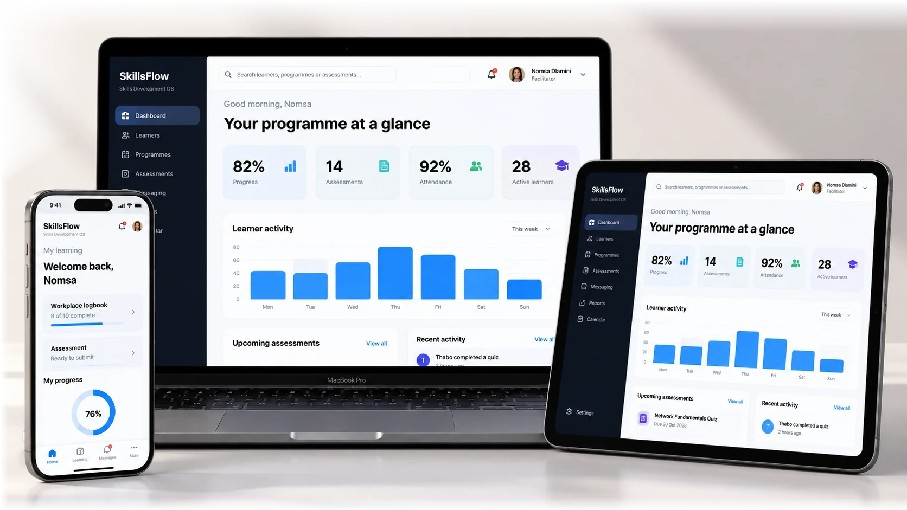

Everyone stays aligned
Facilitators, assessors, administrators and supervisors can follow the same programme journey.
SoftDev360 Learn connects learners, facilitators, assessors, employers and training providers in one ecosystem, bringing learning, assessments, workplace experience, evidence and reporting together.

A smoother way to deliver training, with fewer gaps and a clearer view of what matters.
Facilitators, assessors, administrators and supervisors can follow the same programme journey.
Support more learners and cohorts without multiplying disconnected processes.

Bring learning, workplace records and assessments together around each learner.
Spot incomplete activities, outstanding assessments and stalled progress sooner.
Keep supporting information organised so reviews do not start from scratch.
Spend less energy chasing updates and more time improving delivery.
Five connected steps, so nothing gets lost on the way.
Prepare programmes, content and structure.
Run learning and coordinate activity.
Track submissions, results and progress.
Keep workplace records and proof linked.
See what is complete, pending or at risk.
The bigger a programme gets, the harder it is to keep everyone aligned. When key information lives in different tools, valuable time disappears into follow-ups, files and spreadsheets.
In-person processes and scattered learning materials make it harder to support growing cohorts.
Facilitators, assessors and administrators waste time piecing together the latest information.
Paper trails and missing submissions turn portfolio management into a last-minute rush.
When updates arrive late, small learner issues become bigger delivery problems.
Missed handovers do more than slow the team down. They affect learner momentum, reporting, oversight and confidence in delivery.
Submissions and marking need a clear path, not another email chain.
Logbooks and practical experience are harder to verify when they live offline.
More learners should not automatically require more manual work.
Looking for supporting records at the last minute creates avoidable pressure.
When information lives everywhere, every handover takes extra work.
Everyone follows the same programme, with a clearer view of what happens next.
From the first enrolment to the final report, move through each stage without losing track of the people, tasks or evidence involved.
Bring your learning plan, content, enrolments and responsibilities together before delivery begins.
A clearer path from programme setup to the final record. No disconnected handovers.
Meet the SoftDev360 Learn AI Assistant. Build training reports and ask questions about programme activity, learner progress, attendance and assessments — all in everyday language.
Generate programme summaries, learner trackers, attendance reports, assessment overviews and more.
Ask what needs attention, spot evidence gaps and find answers without hunting through dashboards.
Build a clear report from the information already in your platform.
Give your team a better view.
Give every learner a better journey.
ONE PLATFORM. FROM START TO FINISH.
Run learnerships and skills programmes with learning, assessment and evidence in one place.
Keep practical learning, workplace activity and assessment milestones connected.
Get a clearer picture of programmes delivered across partners and sites.
Coordinate learner activity and supporting records across large cohorts.
See participation, progress and outstanding work across employee development programmes.
Make supporting evidence easier to find, review and prepare for verification.
See how SoftDev360 Learn can bring structure, visibility and momentum to your next training programme.
Book a demo ↗